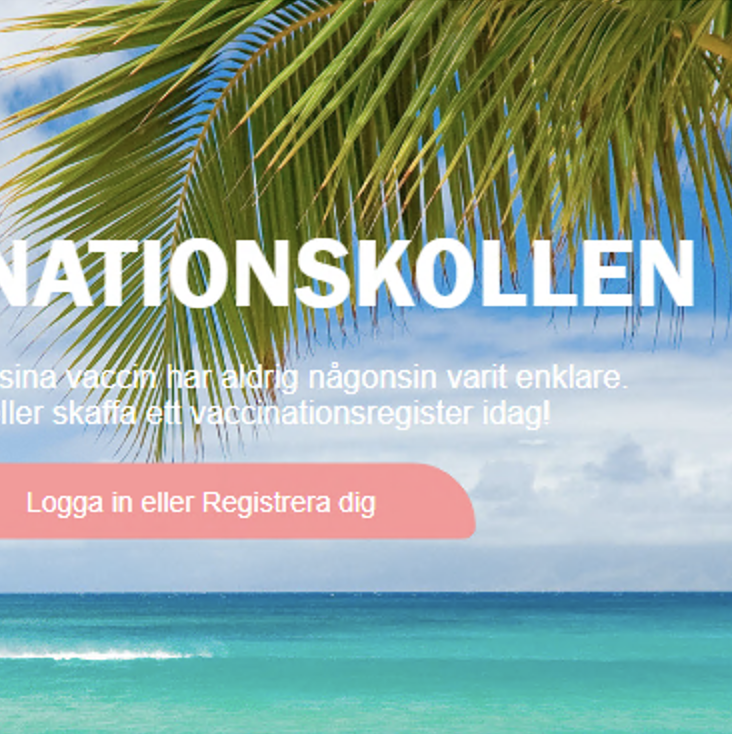

Bullet
Journal

A big interest of mine is being creative in my bullet journal. I love creating fonts, layouts and matching coluors. It's an empty notebook that is filled with creativity!
Vaccination
Record

As a part of a group, I developed a digital vaccination record website prototype. Enables personal vaccination record to keep track of injected and upcoming vaccinations.